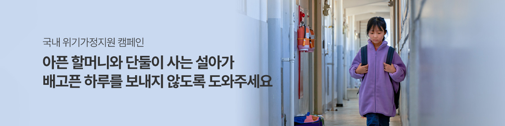

진로탐색 - 다양한 진로탐색 활동을 통하여, 특기 및 흥미 탐구 활동
단, 심리/정서 지원, 놀이 활동 등을 목적으로 하는 사업은 지원 불가
진로실천 - 실제적이고 지속적인 교육을 통한 개인의 역량 강화 및 흥미에
맞는 진로 연계 활동
대회 참가, 자격증 취득 등 진로 관련 개인 역량 강화를 도출 가능한 활동
진로심화 - 진로와 관련된 분야를 결정하고, 이를 토대로 발전되고
구체적인 진로심화 활동
심층 진로교육을 통한 아동 개인역량 강화 프로그램 진행
사업 기간 : 2024년 4월 ~ 2024년 11월
사업 대상 : 드림하이프로젝트 경제교육에 참여 가능한 만 18세 미만 아동, 청소년